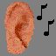
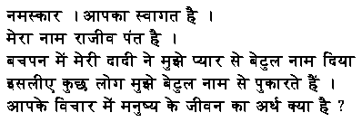

![[About me]](http://photos.rajiv.com/photos/10310741_PUxzg-L.jpg) My Philosophy, Personality, Principles & Peculiarities |
Life in USA |
![[India Related Useful Information]](../india/info/flag.gif) India Related Useful Information ![[India: Humor, Jokes & Fun]](../india/humor/qutab.gif) India Related Jokes, Cartoons, Fun Facts. |
|
A Random Message ... |
Hi ! My name is Rajiv Pant. At home I am called Betul.
|
My Love  Sound & Video |
![[SPV]](../spv/images/chakr2.gif) Sardar Patel Vidyalaya SPV Network |
My WWW tips & Software |
My Schedule |
|
To see if I am presently logged in to a computer on the internet, using the unix finger command, select a system from the box below and click finger.
 .